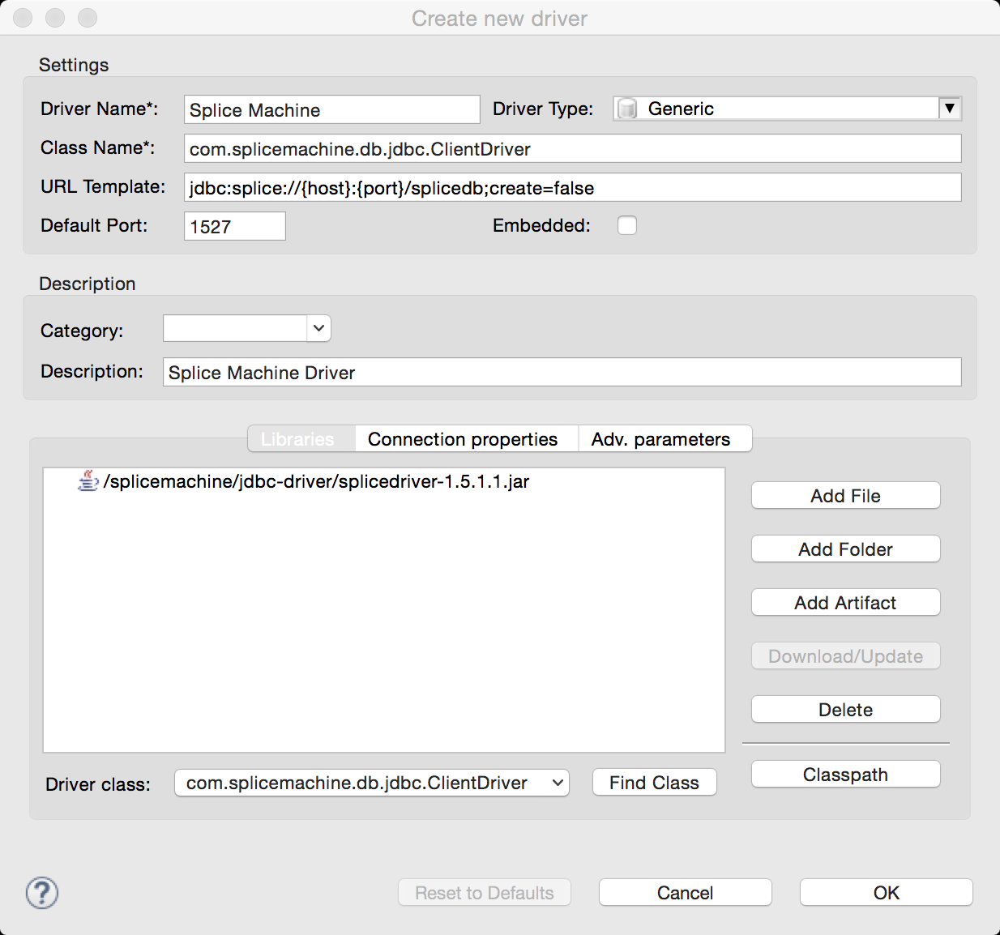
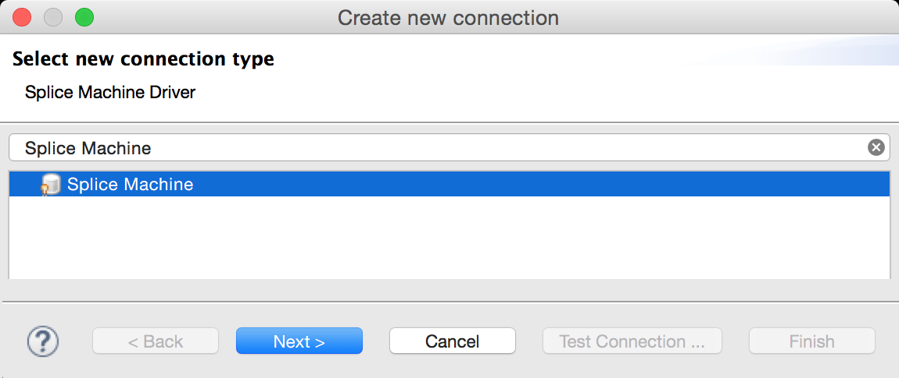
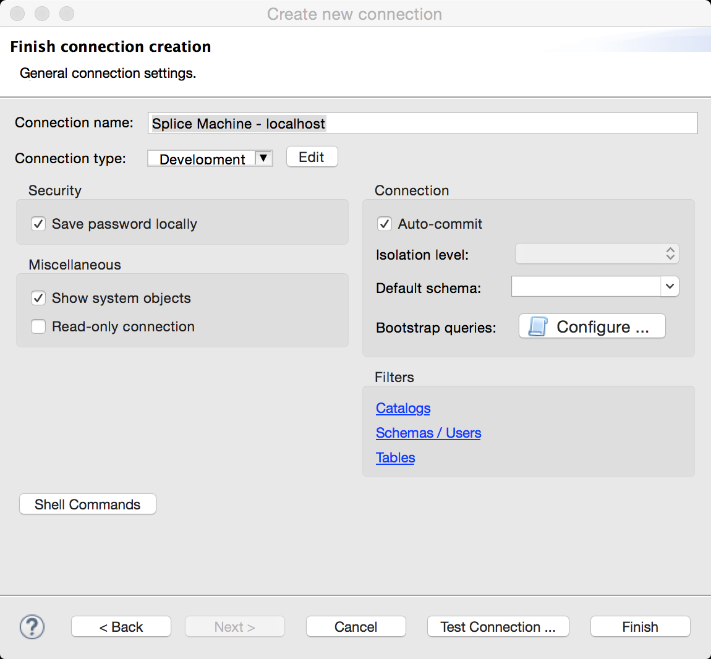
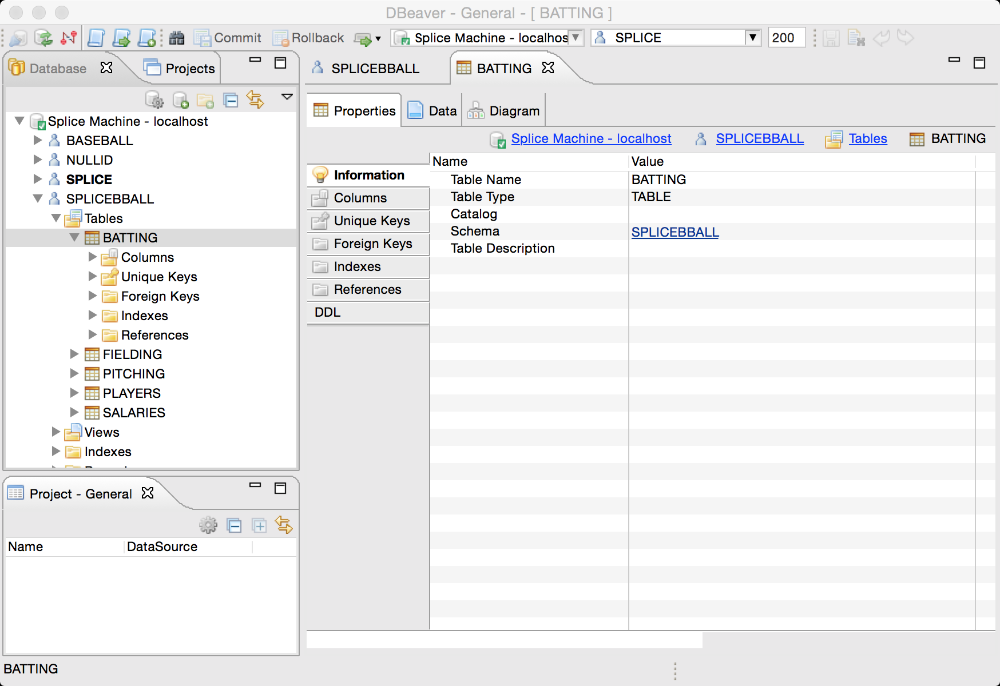

Using DBeaver with Splice Machine
This topic walks you through installing and configuring DBeaver SQL Client for use with your Splice Machine database, in the following sections:
- About the DBeaver Client
- Installing the DBeaver SQL Client
- Configuring DBeaver for Splice Machine
- Using DBeaver with Splice Machine
About the DBeaver Client
The DBeaver Client is a graphical SQL client written in Java that allows you to:
- view the structure of a JDBC compliant database
- browse the data in tables
- issue SQL commands
Installing the DBeaver Client
This section presents installation instructions for the DBeaver Client for for MacOS and Windows computers.
Installing the DBeaver Client on MacOS
Follow these steps to download and install DBeaver on your MacOS computer:
-
Download the installer:
Download the DBeaver for MacOS zip archive from http://dbeaver.jkiss.org/download/.
NOTE: You must Java version 7.0 or higher installed to run DBeaver.
-
Copy the application to your Applications folder:
Double-click the file you downloaded and then copy the DBeaver.app to your Applications folder.
Installing DBeaver on Windows
Follow these steps to install DBeaver on your Windows PC:
-
Download the installer:
Download the installer for the enterprise edition of DBeaver for Windows from http://dbeaver.jkiss.org/download/.
-
Run the installer:
Double-click the dbeaver-<version>.exe file that you downloaded to install DBeaver, using the installer's default values.
Configuring DBeaver for Splice Machine
Before you can use DBeaver with Splice Machine, you must create a new driver definition in DBeaver for Splice Machine. Follow these steps:
-
Find the Splice Machine JDBC Driver
Make sure you can find our JDBC driver, which is installed on your computer when you install Splice Machine. You'll find it in the jdbc-driver folder under the splicemachine directory. Typical locations are:
OS Location MacOS \splicemachine\jdbc-driver\db-client-2.0.1.18.jar Windows C:\splicemachine\jdbc-driver\db-client-2.0.1.18.jar You can also download the driver here:
https://s3.amazonaws.com/splice-releases/2.0.1.18/jdbc-driver/db-client-2.0.1.18.jarIMPORTANT: You must use the Splice Machine JDBC or ODBC drivers; other drivers will not work correctly.
-
Create a DBeaver driver definition for the Splice Machine driver:
- Select Driver Manager from the DBeaver Database menu.
- Click the New button to create your new driver definition.
-
Populate the fields in the Create new driver screen as shown here in the following screen shot:
NOTE: You need to add the Splice Machine JDBC jar file in the definition: click the Add File button and then navigate to where it is stored on your computer; for example:
/splicemachine/jdbc-driver/db-client-2.0.1.18.jar.NOTE: To fill in the Driver class field, click the Find Class button and select the com.splicemachine.db.jdbc.ClientDriver.
- Click the OK button to create your new driver definition.
- Click the Close button to close the DBeaver Driver Manager screen.
-
Create a DBeaver connection for your database:
DBeaver uses pre-defined connections to access your database, so you need to create a connection for each database that you access, using the following steps:
-
Select New Connection from the DBeaver Database menu.
-
Select the Splice Machine Driver connection type in the next screen, then click the Next button:
 -
Fill in the Create new connection screen as shown here:

NOTE: The default user name is splice, and the default password is admin.For Server: on a cluster,specify the IP address of an HBase RegionServer. If you're running the standalone version of Splice Machine, specify localhost.
-
We recommend testing the connection by clicking the Test Connection button.
Splice Machine must be running for a successful connection.
-
Click the Next button. If you have VPN requirements, fill those in on the Network Configuration screen; otherwise, simply click the Next button again.
-
In the Finish connection creation screen, enter a name for your connection and click the Finish button.

-
Using DBeaver with Splice Machine
Once you've finished adding the driver and connection, follow these steps to use DBeaver:
-
Start the DBeaver client:
Locate and run the DBeaver application if it's not already running.
-
Navigate to your database:
In the DBeaver Database Navigator, select the connection you want to use; in the example below, we're using the connection we just connected, which is named Splice Machine - localhost.
-
Select database objects:
Expand the tree structure under your connection to expose the database objects that you want to explore:
